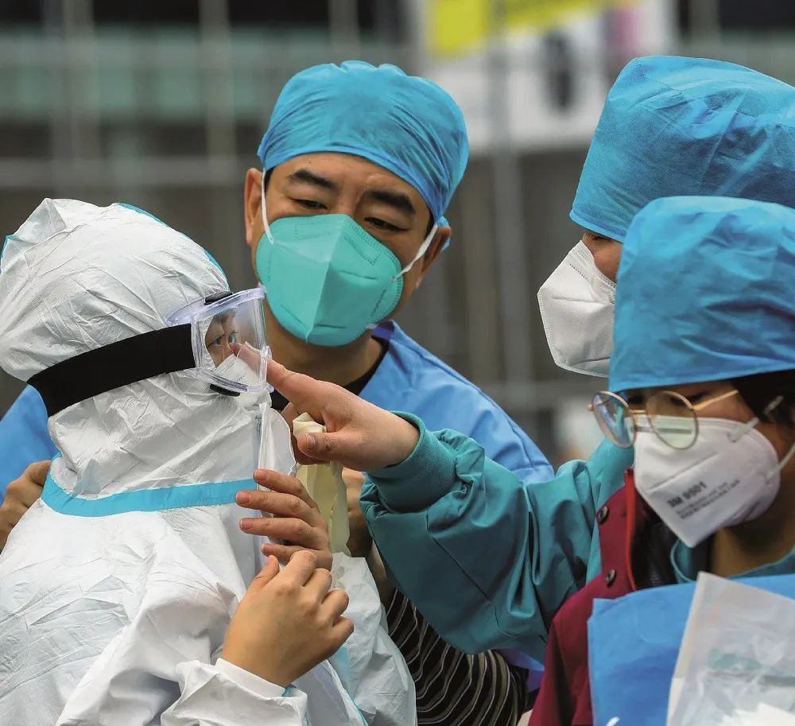
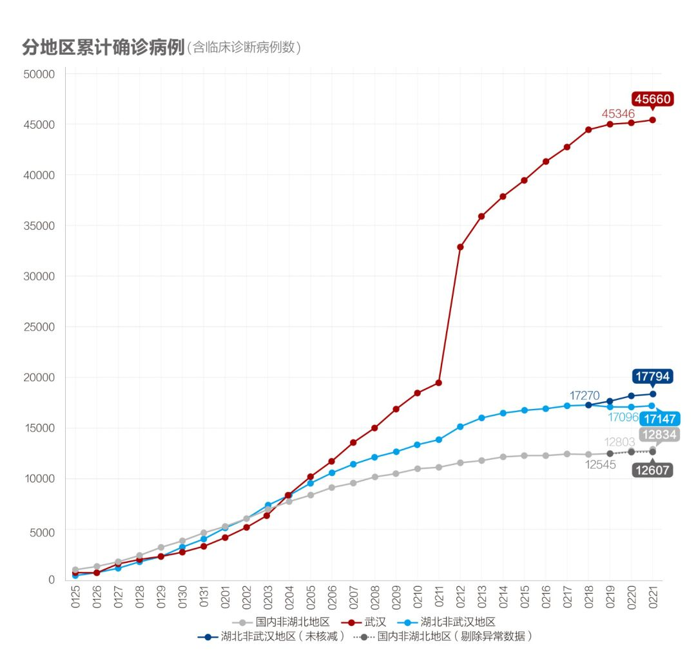
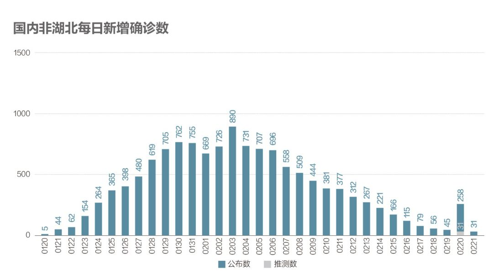
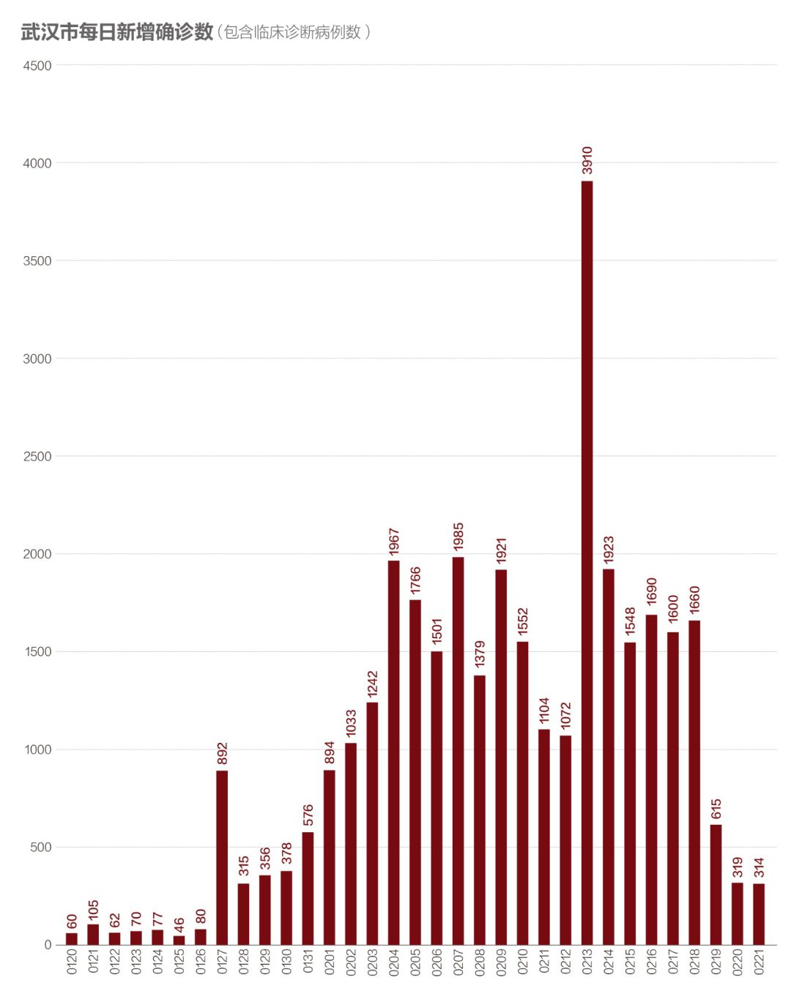
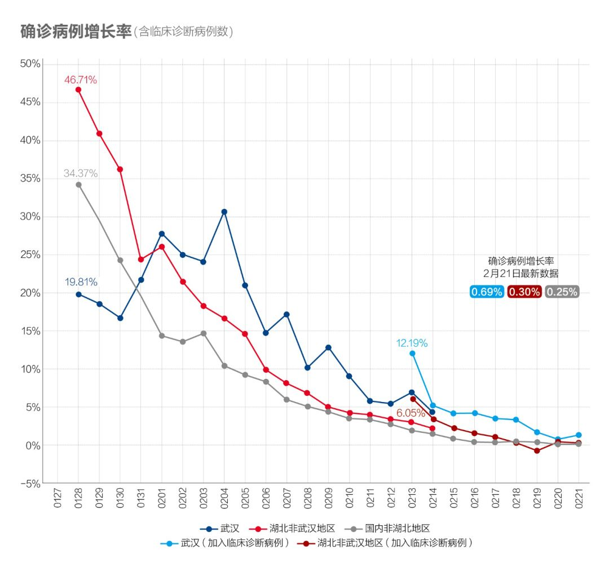
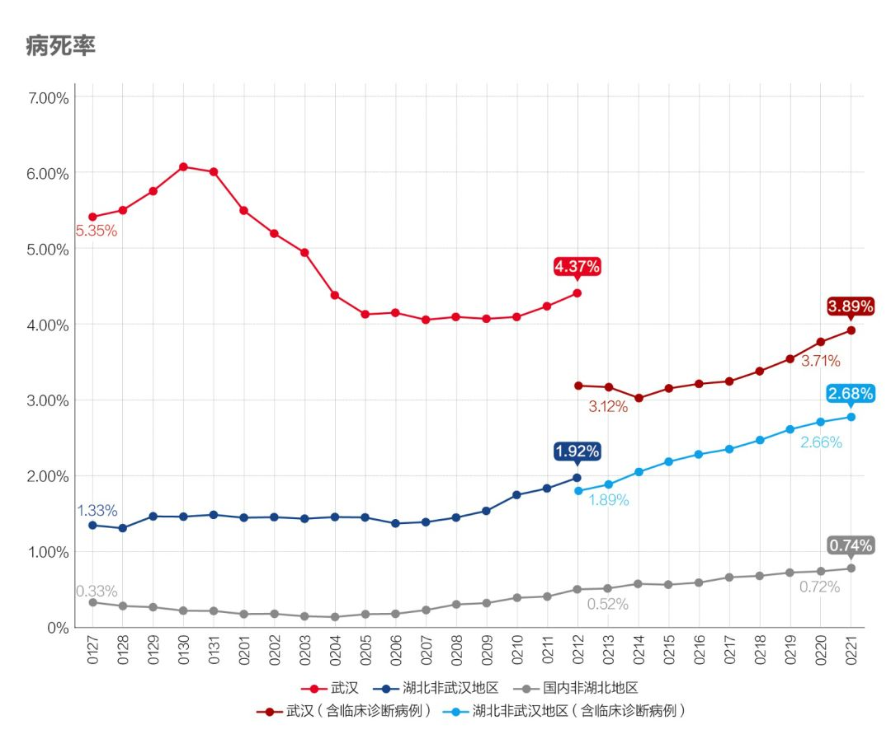
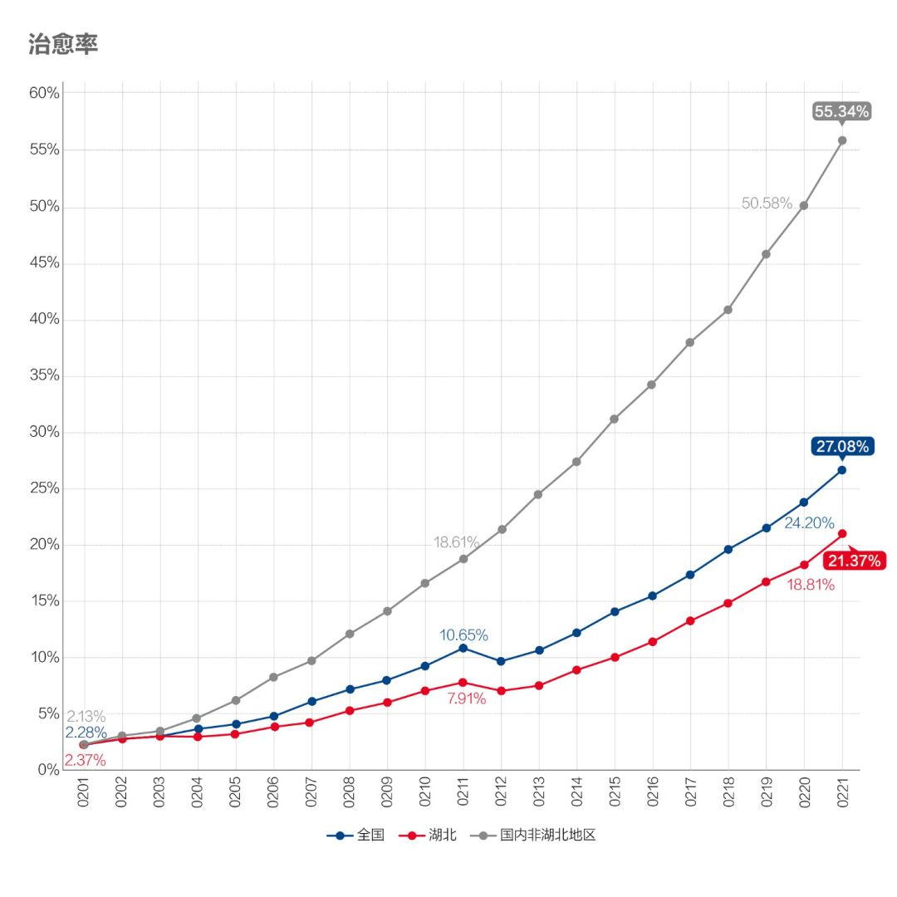
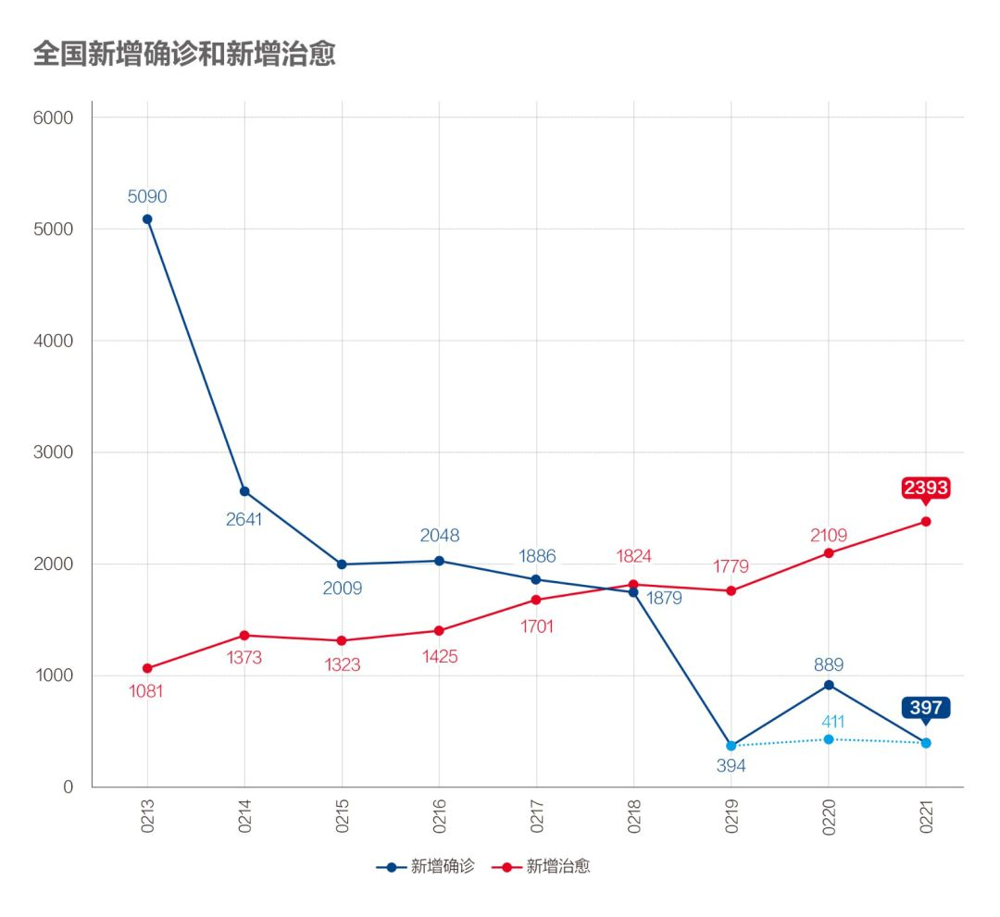

数说疫情0221：武汉疫情出现重要转折，战局由防守转为全面进攻
原文链接 备份链接 _ 武汉新增确诊病例和新增治愈病例今日跨过“黄金交叉”点，从此全国包括武汉在内将逐日加大释放以医院病床床位为核心的医疗资源。但也应注意到2月20日数据出现两个异常：一是非湖北地区新增病例出现巨大反弹；二是国家卫健委与湖 …

为什么我们说武汉战局出现了反守为攻的转机？主要有3点

文 |《财经》数据研究员 徐进
图 |《财经》视觉中心
编辑 | 谢丽容
一、 累计确诊病例：趋势现“顶”
截至2月21日24:00，全国累计报告确诊新冠肺炎病例76288例。以下为分区趋势图。

图1
趋势线已现平顶，目前大体上可以看出：国内非湖北地区累计病例将来停留在在13000例左右，湖北非武汉地区应在19000左右，武汉48000例左右。最主要取决于这个新冠肺炎究竟会像SARS一样不留长尾，还是会如指数函数所预示的那样拖出一条长长的尾巴（最近有专家这样认为）。这个要先等非湖北地区数据。
这几天国家和省市层面都有一些数据调整。小编啰嗦几句：数据或数据口径根据实践及时做一些调整可以理解。但希望调整时对存量、流量，旧账、新账做出区分。混在一起加进“当日新增”，会造成很大困惑，以致小编在做新增量分析时不得不花很多精力审慎剔除新增中属于存量调整的部分，再“推定”或“推测”出当日的实际新增病例。昨天湖北的调整方式很好：存量昨晚先调，增量今天正常报；而国家卫健委今天更直接采取旧账归旧账、存量归存量的办法，从而不会干扰对新增趋势的判断，不需要小编花很多时间去校对、“破案”。这种改进，以人为本，必须给他们都点赞！
二、 新增病例：各地全面向好，武汉保卫战反守为攻迹象确认

图2
湖北以外数据调整后延续下降轨迹。是否会有“超级长尾”存疑。21日已有近2/3的省区新增病例为零。

图3
湖北非武汉地区确诊病例批量核减又核增后，新增病例从异常下降和上升回归正常降幅，正式在两位数水平巩固。符合我们此前预测。

图4
关于武汉今天要多说几句。很多网友关心判断武汉“从防守、阻击转为进攻”的数据依据是什么？
1）数据显示近日武汉五个百分之百决战取得成功。由于武汉是此次疫情中心，疫情突然大规模爆发，导致新冠肺炎筛查、隔离、救治等资源严重不足，而这又导致疫情加速扩散，因而陷入“隔离救治跟不上—疫情扩散加快—隔离救治更加跟不上”的恶性循环，全面被动。所以早期形成大量应查未查、应收未收、应治未治、应隔离未隔离的“堰塞湖”。随后武汉在中央指导、全国帮助下，明确提出“尽收尽治”化解“堰塞湖”，在尽力增加医院床位同时，加大隔离、排查、确诊、收治力度，从而显示新确诊病例数明显增加，从图4可见一大片峰峰相连的堰塞湖化解过程，与图2、3的形态明显不同。这种拉锯过程持续了两周左右，反应多次化解努力之艰难惨烈，我们此前曾用“艰难拉锯战”来形容。从图上可以进一步看出，这一次的化解应该比较彻底；
2）武汉病例增速近几日连续大踏步下降终于降至1%以下，新增出院人数19日开始超过新增确诊，20日当天可以释放500多个病床床位，21日又可以释放近800个床位。扭转了长时间病床数追不上病人数的被动局面。须知病床床位并不就是一张床，它对应着医护人员、诊疗设施等一系列核心“抗疫”医疗资源。从湖北公布的数据可见武汉2月20日开放病床达20989个，比一周前增加5800个；暂空床位1828个，比一周前多1060个。
3）还有一个迹象就是连日来我们计算的湖北密切接触者追踪比（可惜没有武汉数据）不断提高，且势头强劲。说明战场重心确实已可以顾及到“流调”（流行病学调查）这个切断传染链的最关键环节。
所以，综合起来我们认为“武汉保卫战”在经过一段时间惨烈拉锯战后已从被动防守转为主动攻击，形势将逐渐向更加有利的方向发展。
三、 确诊病例增长率：武汉终于降到1%以下

图5
国内非湖北地区增长率降至0.25%，湖北非武汉地区降至0.3%，武汉继续在1%以下。
四、 密切接触者追踪：近期数据显示湖北（含武汉）的追踪力度强力上升，值得期待

图6
湖北这个指标继续爬升！近三日的滑动平均数更显示其升势强劲：追踪比从5.89上到15.87！说明湖北（含武汉）“流调”工作正成为新的战略重点之一。这是我们高度期待的。

图7
湖北和非湖北地区都在继续下降，意味着可以释放更多医疗和社会人力资源投入到新的密切接触者追踪隔离上。
五、 疑似病例：新增减少、存量下降

图8
湖北（含武汉）新增疑似病例转头向下，确认武汉“五个百分之百”功成。

图9
疑似病例存量非湖北地区降至三位数。湖北明天起应开始下降。
六、 在院治疗人数：湖北非湖北都在下降，推测的“湖北确诊未入院”人数稳定

图10
存量下降。我们倒推出的“湖北确诊未入院”人数稳定。
七、 病死率持续回升，但治愈率以更快速度增长

图11
病死率已连续提高两周左右，这里有病死发生时间与新确诊增加不同步的因素（非湖北地区），也有救治能力和医疗资源因素（武汉）。

图12
治愈率以更快速度上升。
八、新增出院远超新增确诊

图13.1新出院人数与新确诊人数

图13.2
武汉一举跨过“黄金交叉”点后战果继续扩大。全国包括武汉在内将逐日加大释放以医院病床床位为核心的医疗资源。战局由防守转为全面进攻。值得庆贺！
小结：武汉保卫战之拉锯战取得重大转机后，继续扩大战果。武汉以外其他地区持续向好，整体战局加速扭转。中央提出在坚决打好湖北保卫战、武汉保卫战，全力做好首都疫情防控工作前提下，实行分区分级精准防控策略。疫情防控、复工复产两不误，湖北以外地区复工复产将有望提速。
● 数说疫情
数说疫情0220：非湖北地区新增病例趋零，现阶段应大胆加快返工复产
数说疫情0216：湖北化解堰塞湖战局扭转，非湖北地区新增病例5日内清零
数说疫情0215：非湖北地区新增病例5日后有望清零，湖北进入总攻阶段

▲点击图片查看更多疫情报道
责编 | 蒋丽 lijiang@caijing.com.cn
本文为《财经》杂志原创文章，未经授权不得转载或建立镜像。如需转载，请在文末留言申请并获取授权。
原文链接 备份链接 _ 武汉新增确诊病例和新增治愈病例今日跨过“黄金交叉”点，从此全国包括武汉在内将逐日加大释放以医院病床床位为核心的医疗资源。但也应注意到2月20日数据出现两个异常：一是非湖北地区新增病例出现巨大反弹；二是国家卫健委与湖 …
原文链接 备份链接 全国武汉以外地区全面向好，期待武汉落实五个“百分之百”终获成功！ 文 |《财经》数据研究员 徐进 图 |《财经》视觉中心 编辑 | 谢丽容 一、 累计确诊病例 截至2月18日24:00，全国累计报告确诊新冠肺炎病 …
原文链接 备份链接 今天起我们将不再提“归零”，以期警钟长鸣 2020年1月17日，医护人员将患者送至武汉金银潭医院。摄影/无畏 文 |《财经》数据研究员 徐进 图 |《财经》视觉中心 编辑 | 谢丽容 一、 …
原文链接 备份链接 我们为什么预测本月20日前每日新增病例归零？五个依据 2020年2月6日，武汉市蔡甸区人民医院的隔离病房。摄影/陈卓 文 |《财经》数据研究员 徐进 图 |《财经》视觉中心 编辑 | 谢丽容 截至2月16 …
原文链接 备份链接 文 | 《财经》数据研究员 徐进 图 |《财经》视觉中心 编辑 | 谢丽容 1. 全国累计确诊病例趋势 截至2月15日24:00，全国累计报告确诊新冠肺炎病例68500人。以下分地区情况。 图1 有朋友提醒小编：你不 …